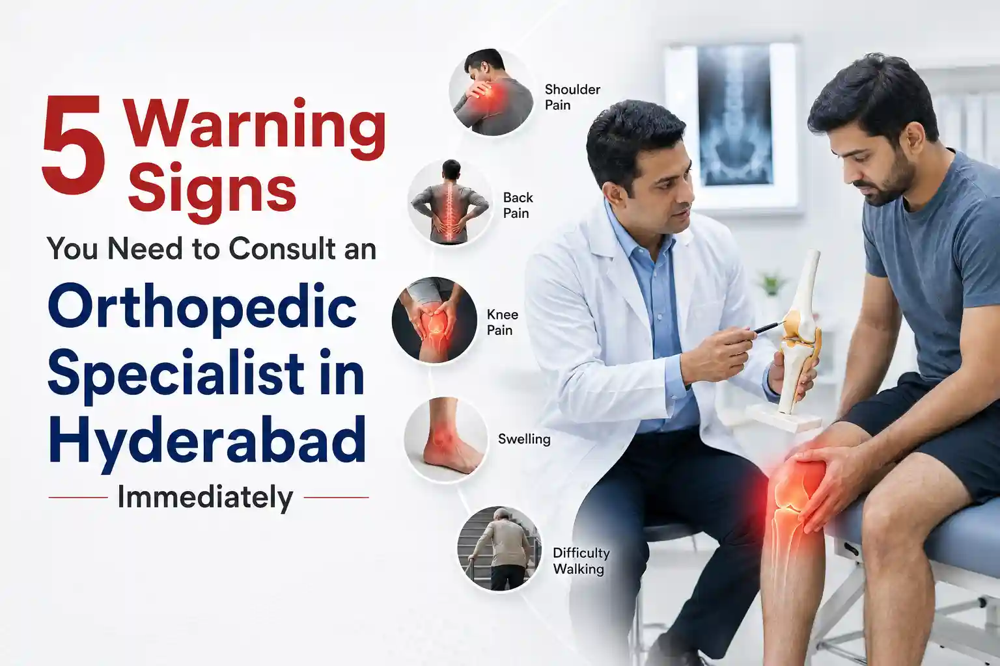

Medically Reviewed by
DR. MIR JAWAD ZAR KHANMBBS, MS - Orthopedic
M.CH-(Ortho)
Joint Replacement surgeon
5 Warning Signs You Need to Consult an Orthopedic Specialist in Hyderabad Immediately
If you have ever woken up with a stiff neck, experienced a sudden knee twinge after a morning jog at KBR Park, or felt a dull ache in your lower back after a long day at the office, you are not alone. Minor aches and pains are a normal part of life. However, there is a significant difference between temporary soreness and a chronic musculoskeletal condition that requires professional medical intervention.
Ignoring persistent pain or attempting to "tough it out" can often turn a minor, easily treatable issue into a severe condition requiring complex surgery or extensive rehabilitation. This is where an orthopedic specialist in Hyderabad steps in. Orthopedics is the medical specialty dedicated to diagnosing, treating, and preventing conditions related to the musculoskeletal system which includes your bones, joints, ligaments, tendons, and muscles.
Finding the best orthopedic doctor in Hyderabad early on can save you from prolonged suffering and prevent long-term damage. But how do you know when it is time to stop relying on over-the-counter painkillers and seek professional help?
In this comprehensive guide, we will walk you through the top five undeniable signs that indicate you need to schedule an appointment with a top ortho doctor near me.
What Does an Orthopedic Physician in Hyderabad Actually Do?
Before diving into the warning signs, it is important to understand the role of an orthopedic expert. An orthopedic physician focuses on the entire musculoskeletal system. This means they treat a vast array of conditions, ranging from sports injuries and bone fractures to degenerative diseases like osteoarthritis and osteoporosis.
When you visit the best bone specialist in Hyderabad, they will not just prescribe medication. They will utilize advanced diagnostic imaging like X-rays, MRIs, and CT scans, perform physical examinations, and assess your medical history to uncover the root cause of your discomfort. Their ultimate goal is to restore your mobility, alleviate pain, and improve your overall quality of life using both non-surgical treatments like physical therapy and injections and surgical treatments like joint replacements or arthroscopy.
Sign 1: Persistent or Worsening Bone and Joint Pain
Pain is your body's alarm system, warning you that something is wrong. While a temporary muscle ache from a strenuous workout should subside within a few days, persistent joint or bone pain is a massive red flag.
Understanding the Difference Between Normal Soreness and Chronic Pain
If you are experiencing pain that lasts longer than 12 weeks, it is medically classified as chronic pain. You should immediately look for an orthopedic specialist Hyderabad if your pain meets any of the following criteria:
- The pain is localized in a specific joint, such as your knee, hip, shoulder, or wrist, and does not go away with rest.
- The pain intensifies during specific activities like climbing stairs or walking but temporarily subsides when you rest.
- You experience night pain that is severe enough to wake you up from your sleep.
- Over-the-counter medications and ice packs are no longer providing relief.
Chronic pain often points to underlying degenerative conditions such as osteoarthritis, rheumatoid arthritis, or even a hairline fracture. Ignoring this symptom will only cause the cartilage, the cushion between your bones, to wear down further, leading to severe bone-on-bone friction.
Sign 2: A Noticeable Decrease in Your Range of Motion
Have you noticed that you can no longer raise your arm to comb your hair, or that bending down to tie your shoes has become incredibly difficult? A restricted range of motion is a clear indicator of joint pathology.
How Stiffness Impacts Your Daily Life
Your joints are designed to move fluidly. When they do not, it is usually due to inflammation, swelling, or structural damage within the joint capsule. You might experience:
- Morning Stiffness: Waking up with joints that feel locked or incredibly stiff, taking over 30 minutes to loosen up.
- Inability to Fully Extend: Feeling a physical block when trying to fully straighten your knee or elbow.
- Grinding Sensations: Hearing or feeling a grinding, clicking, or popping sensation when you attempt to move the joint.
A restricted range of motion is often an early sign of conditions like frozen shoulder, severe arthritis, or a torn meniscus. Consulting an orthopedic physician in Hyderabad will help you get an accurate diagnosis. They can recommend targeted physical therapy, corticosteroid injections, or minimally invasive procedures to restore your flexibility before the joint freezes completely.
Sign 3: You Have Difficulty Performing Everyday Tasks
When musculoskeletal issues begin to interfere with your routine activities, it is a critical sign that your condition is escalating. You should not have to plan your day around your pain.
Ask yourself if you are struggling with any of the following tasks:
- Walking short distances without needing to sit down and rest.
- Gripping objects, opening jars, or typing on a keyboard without sharp pain in your wrists or fingers.
- Getting in and out of a car, or transitioning from a seated to a standing position.
- Carrying light groceries or lifting your child.
When your baseline functionality drops, it means your joints, muscles, or bones are failing to support your body weight and biomechanics adequately. An orthopedic expert will conduct a thorough functional assessment to determine which structures are failing and develop a customized treatment plan to help you regain your independence.
Sign 4: Joint Instability or Feeling Like a Joint Might Give Out
Instability is a terrifying symptom. If you frequently feel like your knee is going to buckle underneath you, or your shoulder feels like it is slipping out of its socket, you need urgent orthopedic attention.
Joint stability is maintained by a complex network of ligaments and tendons. When these connective tissues are stretched, torn, or severely weakened, the joint loses its structural integrity. Common causes of joint instability include:
- Ligament Tears: Such as an ACL tear in the knee, common among athletes and active individuals.
- Recurrent Dislocations: If you have previously dislocated a shoulder or kneecap, the surrounding tissues may become lax, making future dislocations more likely.
- Severe Cartilage Damage: Advanced arthritis can alter the alignment of the joint, causing instability while walking or standing.
Trying to walk on an unstable joint is incredibly dangerous, as a sudden fall could lead to severe fractures or head injuries. By searching for a top ortho doctor near me, you can access treatments ranging from custom bracing and targeted muscle-strengthening programs to ligament reconstruction surgeries that will stabilize the joint permanently.
Sign 5: Soft Tissue Injuries That Show No Signs of Healing
Sprains, strains, and contusions are common soft tissue injuries. The standard protocol for these injuries is R.I.C.E, which stands for Rest, Ice, Compression, and Elevation. In a healthy individual, a mild to moderate soft tissue injury should show significant improvement within 48 to 72 hours.
However, if you have applied the R.I.C.E method for several days and the swelling, bruising, or pain is not subsiding or is getting worse, it is time to see the best bone specialist in Hyderabad.
Non-healing soft tissue injuries could actually be masking more severe problems, such as:
- Complete tendon ruptures like a ruptured Achilles tendon or rotator cuff tear.
- Occult fractures, which are tiny hidden bone fractures that do not easily show up on initial low-quality X-rays.
- Severe muscle tears that require surgical reattachment.
- Infections within a joint or bursa.
Delaying treatment for severe soft tissue injuries can lead to improper healing, chronic weakness, and a permanent reduction in your physical capabilities.
Why You Need the Best Orthopedic Doctor in Hyderabad for Your Care
When dealing with something as crucial as your musculoskeletal health, expertise matters. The city of Hyderabad is home to world-class medical infrastructure, but finding a specialist who combines clinical excellence with compassionate care is vital.
When you choose the best orthopedic doctor in Hyderabad, you are benefiting from:
- Accurate Diagnostics: Leveraging the latest imaging technologies to pinpoint the exact source of your pain.
- Evidence-Based Treatments: Access to the most recent advancements in orthopedic care, including regenerative medicine, advanced arthroscopy, and robotic-assisted joint replacements.
- Personalized Care: A doctor who listens to your lifestyle goals, whether that is returning to professional sports, playing with your grandchildren, or simply living a pain-free life, and tailors the treatment accordingly.
- Comprehensive Rehabilitation: Guidance through physical therapy and post-treatment care to ensure a full, sustainable recovery.
Your bones and joints are the foundation of your body. Do not trust them to just anyone. Ensure your doctor has specialized training, positive patient reviews, and a proven track record of successful outcomes.
What to Expect During Your Initial Consultation
If you have recognized one or more of these five warning signs, your next step is booking an appointment. Feeling anxious before a doctor's visit is normal, but knowing what to expect can help ease your mind.
During your first visit to an orthopedic physician in Hyderabad, you can expect:
- Detailed Medical History: The doctor will ask about your current symptoms, how long you have had them, previous injuries, and any family history of joint diseases.
- Physical Examination: The specialist will assess your joint’s range of motion, check for swelling or tenderness, and test your muscle strength and nerve function.
- Diagnostic Testing: If necessary, X-rays or an MRI will be ordered to get a clear look at your bones and soft tissues.
- Discussion of Options: Your doctor will explain your diagnosis in plain, easy-to-understand language and outline your treatment options, starting with the most conservative, non-surgical approaches whenever possible.
Living with joint pain, stiffness, or instability is not a normal part of aging, nor is it something you have to silently endure. Your body gives you clear warning signs when it is struggling, from chronic aches and reduced mobility to unstable joints and lingering injuries. Recognizing these symptoms early is the key to a fast and effective recovery.
By paying attention to your body and consulting an orthopedic specialist in Hyderabad at the first sign of trouble, you can prevent minor issues from becoming major disabilities. Prioritize your health today so you can continue moving freely and comfortably tomorrow.
Ready to Live Pain-Free?
Do not let joint pain dictate your life. Connect with us if you are facing persistent joint, bone, or muscle pain in Hyderabad, and schedule a consultation with the best orthopedic doctor in Hyderabad today.
To book your appointment, call us now at +91 998 963 5555. Let our expert team help you get back to the activities you love, safely and effectively.
FAQs About Orthopedic Care
1. Do I need a referral to see an orthopedic specialist in Hyderabad?
While some insurance plans may require a referral from a general physician, many patients book direct consultations with an orthopedic specialist, especially for acute injuries or chronic, severe pain.
2. Will I definitely need surgery if I see a bone specialist?
No. Surgery is rarely the first option. The best orthopedic doctor in Hyderabad will always prioritize conservative treatments like physical therapy, medication, lifestyle modifications, and injections before considering surgical intervention.
3. What is the difference between a rheumatologist and an orthopedic doctor?
Rheumatologists primarily treat systemic autoimmune diseases that affect the joints, such as rheumatoid arthritis, using medication. Orthopedic doctors focus on the mechanics of the musculoskeletal system, treating injuries, structural damage, and degenerative conditions using both surgical and non-surgical methods.
4. How should I prepare for my first orthopedic appointment?
Bring any previous medical records, X-rays, or MRI scans related to your condition. Wear loose, comfortable clothing that allows the doctor to easily examine the affected joint. Make a list of your symptoms and any questions you want to ask.
5. How long does recovery typically take for orthopedic treatments?
Recovery timelines vary drastically depending on the condition and treatment. A mild sprain treated with physical therapy may take a few weeks, while recovery from a major surgery like a joint replacement can take several months. Your specialist will provide a specific timeline based on your customized treatment plan.
References


DR. MIR JAWAD ZAR KHAN
MBBS, MS - Orthopedic, M.CH-(Ortho) Joint Replacement Surgeon
As the visionary Chairman and Managing Director of Germanten Hospitals, Hyderabad, Dr. Mir Jawad Zar Khan brings over two decades of surgical leadership to the field. He is dedicated to transforming lives through evidence-based treatments, advanced robotic technology, and a commitment to patient quality of life.